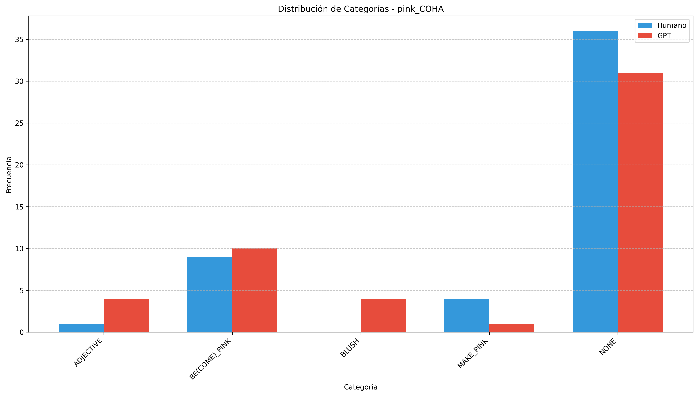

Informe de Evaluación - pink_COHA
Generado el 27/04/2025 13:08:08
Métricas Globales
Accuracy
0.1600
Cohen's Kappa
0.0309
Muestras
50
Imágenes de Análisis
Las siguientes imágenes muestran diferentes aspectos del análisis:
Matriz de Confusión

Distribución de Categorías
Métricas por Categoría

Métricas por Categoría
| Categoría | Muestras | Precisión | Recall | F1 |
|---|---|---|---|---|
| NONE | 36.0 | 0.0000 | 0.0000 | 0.0000 |
| BE(COME)_PINK | 9.0 | 0.2000 | 0.7778 | 0.3182 |
| MAKE_PINK | 4.0 | 0.0000 | 0.0000 | 0.0000 |
| ADJECTIVE | 1.0 | 0.1000 | 1.0000 | 0.1818 |
| BLUSH | 0.0 | 0.0000 | 0.0000 | 0.0000 |
| NOUN | 0.0 | 0.0000 | 0.0000 | 0.0000 |
Distribución de Categorías
| Categoría | Humano | GPT | Diferencia |
|---|---|---|---|
| ADJECTIVE | 1 | 10 | 9 |
| BE(COME)_PINK | 9 | 35 | 26 |
| BLUSH | 0 | 2 | 2 |
| MAKE_PINK | 4 | 2 | -2 |
| NONE | 36 | 0 | -36 |
| NOUN | 0 | 1 | 1 |
Patrones de Confusión Comunes
| Categoría Humano | Categoría GPT | Frecuencia |
|---|---|---|
| NONE | BE(COME)_PINK | 24 |
| NONE | ADJECTIVE | 8 |
| MAKE_PINK | BE(COME)_PINK | 4 |
| NONE | MAKE_PINK | 2 |
| NONE | BLUSH | 1 |
| BE(COME)_PINK | BLUSH | 1 |
| NONE | NOUN | 1 |
| BE(COME)_PINK | ADJECTIVE | 1 |
Ejemplos de Errores
Ejemplo 1
Texto: there goes the cannon! and yonder run the cowards. How they are getting pinked in their backs! Fools! They don't know anything about war. It
Categoría Humano: NONE
Categoría GPT: BE(COME)_PINK
Ejemplo 2
Texto: waiting for me on the Pacific slope, and I don't want to get pinked by the Johnny Rebs. * ((Well, they're not very particular over
Categoría Humano: NONE
Categoría GPT: BE(COME)_PINK
Ejemplo 3
Texto: and were content with the spectacle -- ladies sweeping by in silver-gauze tunics, showily pinked, crape and silk velvet dresses glittering with gold spangles, depending skirts twinkling and
Categoría Humano: NONE
Categoría GPT: ADJECTIVE
Ejemplo 4
Texto: recover. An old buckskin riding gauntlet, neatly stitched about the wrist, and pinked on the wristlet. A pretty glove, strangely, almost tragically, feminine in
Categoría Humano: NONE
Categoría GPT: ADJECTIVE
Ejemplo 5
Texto: malarial valley, where stood the shining towers of Balak; he could see them pinked by the morning sun and low on the horizon. All together he was glad
Categoría Humano: MAKE_PINK
Categoría GPT: BE(COME)_PINK
Ejemplo 6
Texto: .' N so'll others. Lotsa others, I betcha! " Blood pinked his thin, sallow flesh and his eyes praised the new world they visioned.
Categoría Humano: MAKE_PINK
Categoría GPT: BE(COME)_PINK
Ejemplo 7
Texto: minutes the shrewd sword thrusts of Captain Czlovoydi. When the Cavalryman at last slightly pinked the Count on the shoulder, Negress Baker flung herself hysterically between the duelists,
Categoría Humano: NONE
Categoría GPT: MAKE_PINK
Ejemplo 8
Texto: was just a harmless expression of their ego. And children allow themselves to be pinked by hot stoves just to get a little sympathy out of their parents. -- What
Categoría Humano: NONE
Categoría GPT: MAKE_PINK
Ejemplo 9
Texto: n't lay down an' cry, by cripes, jes' because he gets pinked a little -- " " Aw, that's jest because -- it ain't
Categoría Humano: NONE
Categoría GPT: BLUSH
Ejemplo 10
Texto: a Conservative party picnic was being held. When reporters crowded round, the lady pinked with amiability. " I was wondering as I entered the Zoo, " she
Categoría Humano: BE(COME)_PINK
Categoría GPT: BLUSH